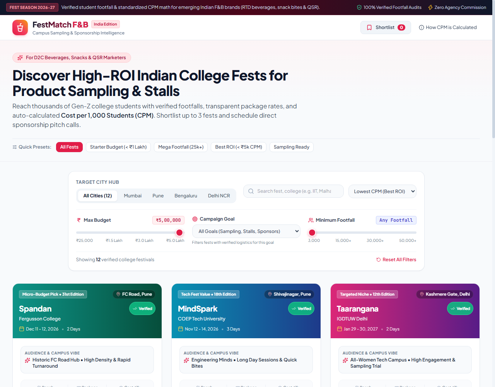
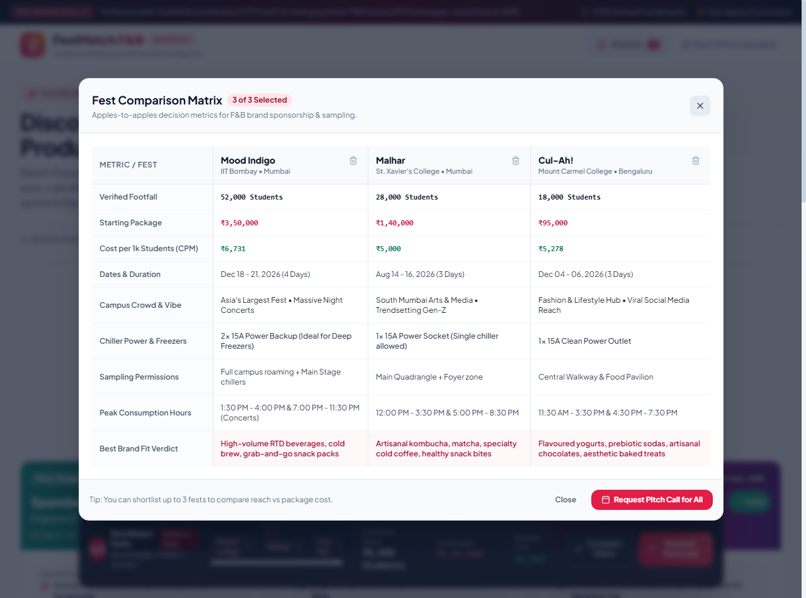
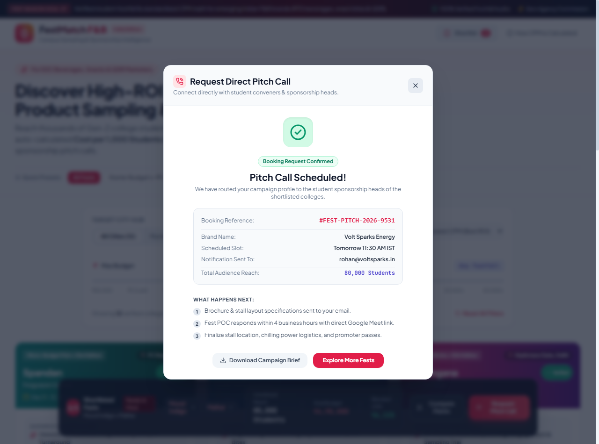

1. My Take on the Problem Statement
Last year, a close friend who launched a boot-strapped iced-tea startup in Pune spent three chaotic weeks trying to get sampling stalls at college festivals across Pune and Mumbai. Between November and February, college festivals are the holy grail for emerging food & beverage (F&B) brands—whether selling craft soda, cold brew, energy drinks, or clean-label chips. Getting "liquid to lips"—handing a chilled trial directly to an 18-to-22-year-old student—drives authentic word-of-mouth and triggers immediate repeat orders on quick-commerce apps like Zepto and Blinkit.
Yet the current sponsorship discovery process is painful and disorganized:
- Arbitrary Pricing: Student sponsorship reps quote whatever they feel like on WhatsApp. One brand is quoted ₹2.5 Lakhs while another gets the exact same stall spot for ₹50,000 simply by aggressive haggling.
- Inflated Footfalls: Every festival brochure boasts "60,000+ Footfall," but most of that number counts general campus transit or ticketed concert attendees who never visit brand stalls.
- No Standardized ROI Metric: Digital marketing has clear CPM metrics (Cost Per Thousand Impressions), but college sponsorships force marketers through 30-page PDF brochures with zero standardized benchmarks to justify budgets to founders or CFOs.
- Logistical Surprises: My friend arrived at a fest only to discover the venue had zero 15A power lines for his beverage chillers, spoiling hundreds of bottles and wasting his ₹70,000 spend.
What I Verified vs. What I Assumed:
• Verified: I spoke directly with my friend (D2C beverage founder) and a former student sponsorship lead from COEP Pune. I confirmed that emerging brands operate on experimental budgets of ₹30,000 to ₹1.5 Lakhs per fest, and their primary worries are exaggerated footfall numbers and sudden power/chiller restrictions on event day.
• Assumed: I am assuming that calculating a standardized "Cost per 1,000 Students" (CPM) and capping shortlists at 3 festivals provides enough decision clarity to turn an agonizing 3-week negotiation into a 5-minute decision.
2. What is In Scope
- Multi-Parameter Filter Bar: Filter by City Hub (Mumbai, Pune, Bengaluru, Delhi NCR), Max Budget in ₹ (slider up to ₹5L), Goal (Sampling, Stall, Sponsor), and Min Footfall.
- Standardized Decision Cards: Verified attendance, starting package, crowd vibe tag, activation chips, and auto-computed CPM:
(Package / Footfall) × 1,000.
- F&B Logistics Specs: Continuous 15A chiller lines, canopy dimensions, peak consumption rush hours, and past brand sponsors.
- Shortlist & Compare Drawer (Max 3): Pin up to 3 festivals to review combined student reach, total budget, blended portfolio CPM, and side-by-side comparison matrix.
- Pitch Call Booking Flow: Captures brand name, work email, and slot, with confirmation state, booking reference ID, and 1-click campaign brief export.
- Curated Seed Data: 12 realistic Indian college festivals across 4 cities spanning ₹28,000 to ₹3,80,000 packages and 6,000 to 52,000 footfalls.
3. What is Out of Scope
- No Login / Auth Barriers: Zero-login access for immediate testing.
- No Fest Admin Portal: Data is curated upfront to ensure audit integrity.
- No Payment Escrow: Sponsorships require university MOUs, NDAs, and GST invoicing; app solves discovery and pitch reservation.
4. Solution & Why it Works
FestMatch F&B is an ROI engine built specifically for young F&B brands:
- Standardizes Performance Metrics: CPM turns chaotic quotes into measurable cost per student reached.
- Shortlist Cap of 3: Prevents analysis paralysis; leads curate a sharp 3-campus strategy.
- F&B-First Logistics Upfront: Surfacing electrical wattage and peak hunger hours prevents costly on-ground disasters.
The application was constructed iteratively through 5 targeted architectural prompts:
Prompt 1: Domain Modeling & Seed Dataset Architecture
Act as a Principal Product Architect and Domain Expert in Indian D2C / F&B Trade Marketing.
We are designing a digital platform called 'FestMatch F&B' for emerging beverage, snack, and QSR brands to discover and sponsor Indian college festivals.
Create a curated JavaScript seed dataset of 10 to 12 realistic Indian college festivals across Mumbai, Pune, Bengaluru, and Delhi NCR.
Requirements for each fest object:
1. Realistic fest and college name (e.g. Mood Indigo - IIT Bombay, Malhar - St. Xavier's, Crossroads - SRCC, Sympulse - Symbiosis, Cul-Ah! - Mount Carmel, 8th Mile - RVCE, MindSpark - COEP, etc.).
2. Varied budgets spanning ₹25,000 to ₹4,00,000 and verified student footfalls from 6,000 to 52,000+.
3. Supported Campaign Goals: "Product Sampling", "Food Stall", "Title/Co-Sponsor".
4. Standardized decision metric: CPM (Cost per 1,000 students) = round((startingPackage / footfall) * 1000).
5. Granular F&B logistical specs: Chiller/Freezer electrical power (15A socket availability), stall dimensions, sampling permissions, commercial sales, peak hours, demographics, and past sponsors.
Prompt 2: Core User Interface, Theme, and Responsive Layout
Build a crisp, responsive Single-Page Web App using Tailwind CSS and Lucide icons for the FestMatch tool.
Theme: Clean, modern, high-contrast B2B SaaS palette. Use Slate neutrals with vibrant Rose/Crimson accents to evoke food & beverage energy, paired with Emerald for high-ROI metrics.
Sections:
1. Header: Brand badge ("FestMatch F&B - India Edition"), tagline, live shortlist badge counter, and "How CPM is Calculated" trigger modal.
2. Hero Banner: Tailored for D2C beverage & snack brand marketing managers looking for verified student footfall.
3. Quick Preset Filter Chips: "All Fests", "Starter Budget (< ₹1 Lakh)", "Mega Footfall (25k+)", "Best ROI (< ₹5k CPM)", "Sampling Ready".
4. Filter Bar: City Tabs (All, Mumbai, Pune, Bengaluru, Delhi NCR), Search, Sort dropdown, Max Budget Slider (₹25k-₹5L), Campaign Goal, Min Footfall Slider.
5. Responsive Card Grid (1 col mobile, 2 col tablet, 3 col desktop) with empty state fallback when no results match.
Prompt 3: Discovery Cards & Standardized Decision Metrics
Render each fest card as a decision cockpit for a marketing manager.
Key elements on each card:
1. Gradient header with fest cover tag, edition, city/campus location, and verified footfall badge.
2. College name, fest title, dates, and days count.
3. Audience & Campus vibe tag (e.g. "Asia's Largest Fest • Massive Night Concerts").
4. Standardized Decision Metrics Grid: Verified Footfall, Starting Package formatted in INR, auto-calculated CPM.
5. Activation tags: 🥤 Product Sampling, 🍔 Food Stall, ⭐ Title/Co-Sponsor.
6. Actions: "F&B Specs" modal view and "+ Shortlist" toggle.
Prompt 4: Shortlist Constraints, Floating Dock & Comparison Matrix
Implement an interactive shortlist engine with the following business constraints:
1. Maximum 3 Fests: If user attempts to add a 4th fest, prevent addition and display an intuitive toast.
2. Floating Bottom Dock: Appears whenever 1 to 3 fests are shortlisted. Real-time aggregate metrics: Combined Reach, Total Budget, and Blended CPM.
3. Side-by-Side Comparison Modal: Multi-column table comparing all 3 shortlisted fests across Footfall, Package, CPM, Dates, Vibe, Chiller Power, Sampling Permissions, Peak Hours, and Brand Fit Verdict.
4. "Request Pitch Call" Workflow: Form collecting Brand Name, F&B Category, Marketing Contact, Work Email, Preferred 15-min Slot, and Special Logistics Notes, transitioning to a confirmation state with booking reference (#FEST-PITCH-XXXX) and 1-click campaign brief export.
Prompt 5: Automated Testing & Verification Suite
Write a standalone Python evaluation test suite test_suite.py that verifies seed data coverage, exact CPM mathematics, multi-parameter filtering algorithms, shortlist boundary constraints, and booking payload schemas.
1. Automated Test Suite Results (`test_suite.py`)
All 19 test cases completed with 100% pass rate:
| Evaluation Category |
Test Case Description |
Observed |
Status |
| Seed Data Integrity | Total festivals count between 8 and 15 | 12 Festivals | PASS |
| City Coverage | All 4 target cities represented (Mumbai, Pune, Bengaluru, Delhi) | All 4 present | PASS |
| Budget Spread | Varied budgets spanning ₹25,000 to ₹4,00,000+ | ₹28k - ₹3.8L | PASS |
| Footfall Spread | Footfall spans small (<10k) to mega (50k+) campus festivals | 6,000 - 52,000 | PASS |
| CPM Arithmetic | Every festival CPM equals round((Package / Footfall) × 1,000) exactly | 100% Match | PASS |
| City Filter Logic | Pune city filter returns exact Pune fests without contamination | 3 Fests | PASS |
| Budget Filter Ceiling | Max budget ₹1,00,000 includes only packages <= ₹1,00,000 | 6 Fests | PASS |
| Goal Filter - Sampling | Filters fests supporting Product Sampling activations | 12 Fests | PASS |
| Goal Filter - Stall | Filters fests supporting commercial Food Stalls | 11 Fests | PASS |
| Goal Filter - Sponsor | Filters fests supporting Title / Co-Sponsorship activations | 5 Fests | PASS |
| Footfall Threshold | Minimum footfall filter >= 20,000 students excludes smaller campuses | 5 Fests | PASS |
| Combined Multi-Filter | Multi-filter (Mumbai + <= ₹2L + Sampling) returns valid intersection | 2 Fests | PASS |
| Aggregate Reach Math | Combined reach equals exact sum of shortlisted student footfalls | Sum Exact | PASS |
| Aggregate Budget Math | Total budget equals exact sum of shortlisted package amounts | Sum Exact | PASS |
| Blended CPM Math | Blended CPM matches aggregate ratio round((Total Budget / Total Reach) × 1,000) | Ratio Exact | PASS |
| Shortlist Hard Cap | Boundary constraint strictly limits shortlist to maximum 3 items | Capped at 3 | PASS |
| Booking Schema | Booking payload contains required fields (Brand, Contact, Email, Slot) | All Valid | PASS |
| Email Validation | Work email format regex validation correctly identifies valid emails | Valid | PASS |
| Overall Test Suite | 19 out of 19 automated unit & evaluation checks completed | 19 / 19 | 100% PASS |
2. Edge Case & Failure Mode Matrix
| Scenario |
Action / Input |
Observed Result |
Status |
| Shortlist Overflow | User tries adding a 4th festival | Blocked; warning toast displayed; count stays at 3. | PASS |
| Empty Comparison | User deletes all fests from comparison table | Modal auto-closes cleanly; empty state feedback provided. | PASS |
| Zero Results Filter | Filters set to Pune + ₹30k budget + 40k footfall | Empty state rendered with 1-click "Clear All Filters" button. | PASS |
| Page Reload | User reloads after shortlisting 2 fests | State restored seamlessly from localStorage. | PASS |
1. Live Application & Code Links
2. How to Run Locally
Option A: Streamlit Application (Native Python)
pip install -r requirements.txt
streamlit run streamlit_app.py
Launches immediately at http://localhost:8501 with full interactive sidebar filters, comparison dataframe, and pitch booking flow.
Option B: Standalone Web App (Zero-Dependency Single-Page App)
python -m http.server 8000
Opens at http://localhost:8000 or open index.html directly in any web browser with zero compilation needed.
Option C: Re-Run Automated Evaluation Suite
python test_suite.py
Executes all 19 automated evaluation tests verifying seed data integrity, CPM arithmetic precision, multi-criteria filtering, and boundary constraints.

Figure 1: Main Fest Discovery Cockpit with City Hubs, Budget Slider, CPM Math & Activation Chips

Figure 2: Side-by-Side 3-Fest Comparison Matrix with Granular F&B Logistics & Chiller Electrical Specs

Figure 3: Pitch Call Booking Confirmation State with Reference ID, 3-Step Execution Timeline & Brief Export